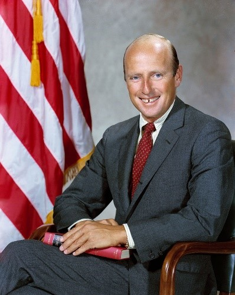

Top 1 史丹福大學 ↓

成立於1746年，是一所位於美國新澤西州普林斯頓的私立研究型大學，為常春藤盟校之一。雖然它最初是長老制的教育機構，但學校從沒有跟任何宗教機構有直接的聯繫，而現在對學生亦無任何宗教上的要求。普林斯頓現提供各種有關人文、自然科學、社會科學及工程學的本科及研究生課程。至今，已經有41位諾貝爾獎得主、17名美國國家科學獎章得主，14名菲爾茲獎得主，10名圖靈獎得主，及3名美國國家人文獎章奪得人曾經或現為普林斯頓大學的畢業生或教職員。另外，普林斯頓也是獲得最多捐款的學術機構之一。
四大學院：紐澤西學院、工程和應用科學院、建筑和城市設計學院、威爾遜公共和國際事務學院，其下共有32個系。而沒有開設社會上最熱門的學科：法學、商學、醫學。
任何一個專業在全美大學都是名列前茅，數學、哲學和物理系尤其知名。
(1) 學費：
每年平均每學期學費 $41,820美金，每學年宿舍費 $13,620美金。
畢業十年後年薪平均約為 $76,500美金。
(2) 錄取標準：
TOEFL 250 / GPA 3.0
新SAT 1460-1600
新SAT 1450-1580
ACT 32-35
(1) 田長霖：加州大學柏克萊分校第七任校長。也是美國柏克萊加州大學第一個亞裔校長。1959年在普林斯頓大學取得文學碩士以及機械工程博士。

(2) Thomas Woodrow Wilson：美國第28任總統。此前，他曾先後任普林斯頓大學校長，紐澤西州州長等職。
(3) Charles "Pete" Conrad, Jr.：第三個踏上月球的人。於1953年在普林斯頓大學獲得了航空工程學士學位。
